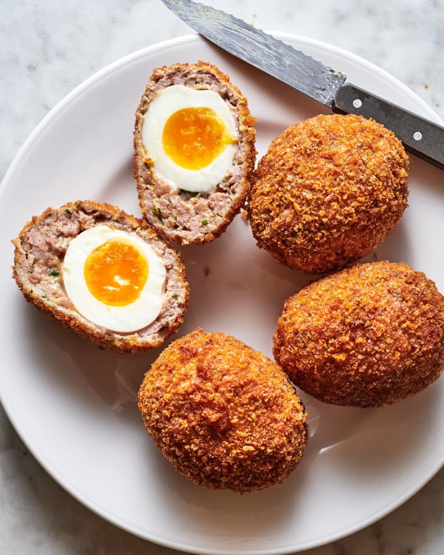

SCOTCH EGGS

How to prepare Scotch eggs for 4 people!
Scotch eggs are a delicious and nutritious protein meal.It's perfect for those after gym workouts!
Ingredients
- Eggs-4
- Pork sausage meat-275g
- Fresh thyme leaves-1tsp
- Fresh parsley,chopped-1tsp
- Spring onion, very finely chopped-1
- Plain flour, seasoned-125g
- Egg, beaten-1
- Breadcrumbs-250g
- Salt and freshly ground black pepper
- Vegetable oil for deep frying
Steps
- Place the eggs, still in their shells, in a pan of water.
- Place over a high heat and bring to the boil, then reduce the heat to simmer for approximately 9 minutes.
- Drain and refresh the eggs under cold running water, then peel.
- Mix the sausage meat with the thyme,parsley and spring onion in a bowl, season well with salt and freshly ground pepper.
- Divide the sausage meat mixture into four and flatten each out on a clean surface into ovals about 12cm long and 8 cm at the widest point.
- Roll the boiled egg in the seasoned flour.
- Place each egg on to a sausage meat oval, then wrap the sausage meat around the egg, making sure the coating is smooth and completely covers the egg.
- Dip each meat-coated egg in the beaten egg, covering the entire surface area.
- Roll in the breadcrumbs to coat completely.
- Heat the oil in a deep heavy-bottomed pan, to 180 degrees. Celsius
- Carefully place each scotch egg into the hot oil and deep fry for 6-8 minutes, until golden and crisp and the sausage meat is completely cooked
- Carefully remove from the oil with a slotted spoon and drain on kitchen paper
To serve, cut the egg in half and season slightly with rock salt. Scotch eggs can be served hot,warm or cold.
Home